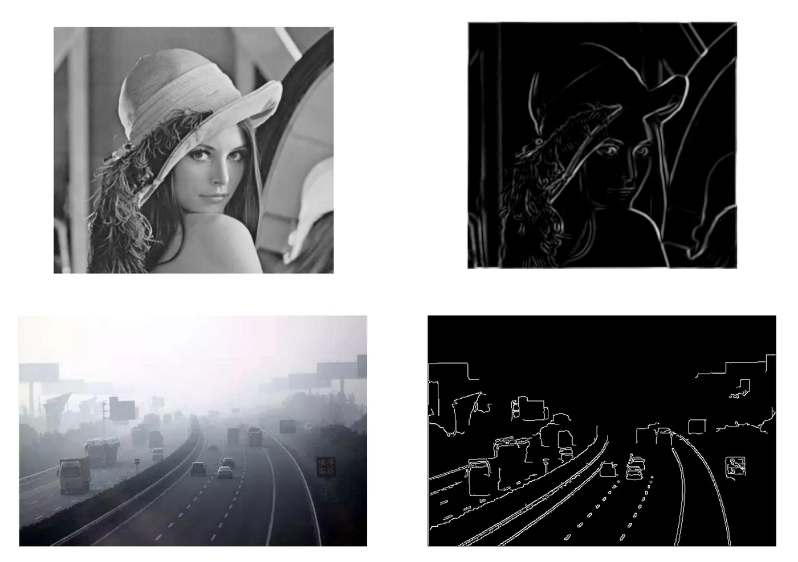
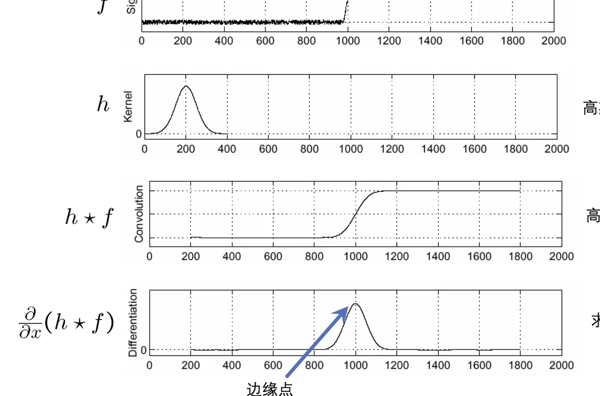
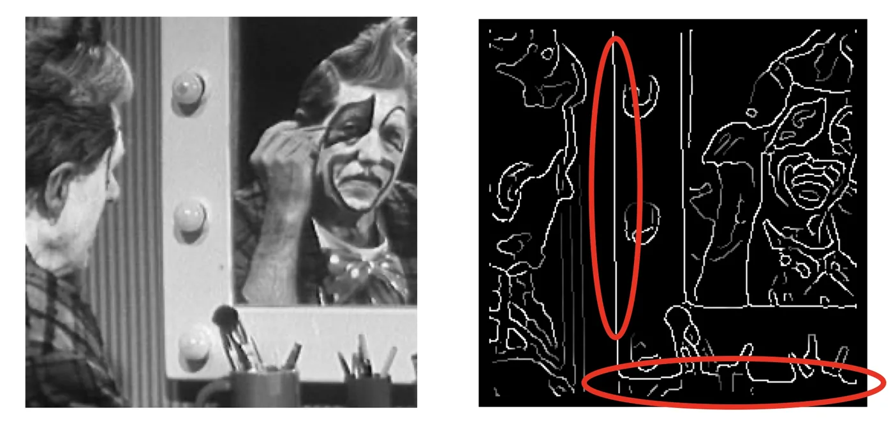

计算机视觉 · 第 3 章 边缘检测与线检测
3.2 Canny 边缘检测器
上一节把边缘检测化归成一次滤波：选一个差分核，与原图卷积，梯度大的地方就是边缘。可真实图像里总有噪声，而噪声恰恰也是「像素值突变」，一样会被差分放大。Canny 检测器给出了一套更讲究的做法。这一节看它的四个步骤，以及它留下的那个问题：边缘检测交出来的是一堆点，不是线。
1. Canny 边缘检测器
Canny 检测器是边缘检测里最经典、也最常用的一种，由 John Canny 在 1986 年提出。它和 Prewitt 这样的单核算子不在一个层次上：Prewitt 是一个 3×3 的滤波器，而 Canny 是一整条处理流程——从抑制噪声开始，到最终给出边缘点为止。
课件用一组结果图来展示它的效果：同一幅图像，经过 Canny 处理之后，只剩下勾勒出物体轮廓的那些边缘点。

2. 四个步骤：从图像到边缘点
课件把 Canny 的流程概括成四步——高斯函数、高斯平滑、求梯度、边缘点。四步是串起来的，前一步的输出就是后一步的输入。
（1）高斯函数：先定一个尺度
第一步是构造一个高斯核。一维高斯函数是
G(x) = (1 / (√(2π) σ)) · exp(−x² / (2σ²))，
推广到二维就是 G(x, y) = (1 / (2πσ²)) · exp(−(x² + y²) / (2σ²))。式子里只有一个需要人来定的参数：标准差 σ。σ 决定这个核「有多胖」——σ 越大，参与平均的邻域越宽。
（2）高斯平滑：把噪声压下去
第二步是把这个核与原图做卷积，得到一张被柔化过的图像。噪声表现为相邻像素之间的高频抖动，加权平均正好能把它压下去；代价是边缘也被抹宽了一点。
这里出现一个绕不开的取舍：σ 太小，噪声压不住，会冒出一堆假边缘；σ 太大，抗噪是好，但边缘被抹得又粗又模糊，位置也就说不准了。Canny 之所以要把「定尺度」放在最前面，就是让这四步自始至终在同一个尺度上工作。
（3）求梯度：在平滑后的图上做差分
第三步是在平滑后的图像上求梯度，做法与上一节的有限差分完全一致：算出每个像素处的水平、垂直方向差分，再合成梯度。得到两样东西——梯度幅值（这个点变化有多剧烈）和梯度方向（朝哪个方向变化最快）。
（4）边缘点：按幅值做取舍
最后一步是判决：梯度幅值大的是候选边缘点，再按阈值把够格的留下，输出「位于边缘的点」。
把这一节和上一节放在一起看，两者的差别就落在第（2）步上：Prewitt 直接对原图差分，噪声被一路放大到结果里；Canny 先做一次高斯平滑再差分，把噪声挡在门外。这正是上一节那句话的实例——边缘检测本质上是滤波，区别只在滤波器的选择。

3. 边并不是线
Canny 的输出看起来已经很像轮廓了，但课件在这里给了一句提醒：边并不是线。
边缘检测给出的信息只有一条——哪些像素位于边缘上。它没有说这些点构成了什么形状，也没有说这条边从哪里开始、到哪里结束、是直的还是弯的。计算机无法判断是否有直线，以及直线的位置。把边缘图放大看，所谓「线」其实是一串宽度不一的散点。
于是问题被自然地分成两步：第一步，把边缘点找出来——这一步由边缘检测完成；第二步，从这些散点里判断「这里到底有没有一条直线、它在哪儿」——这一步还没有着落。下一节的霍夫变换就是为解决第二步而提出的。

本节小结
- Canny 检测器（1986）不是单个滤波器，而是一条完整的处理流程。
- 四个步骤：高斯函数（定尺度 σ）→ 高斯平滑（卷积抑制噪声）→ 求梯度（得到幅值与方向）→ 边缘点（按幅值取舍）。
- 核心取舍在 σ 上：σ 小则噪声多、σ 大则定位粗，所以要先定尺度、后做判决。
- 与 Prewitt 的差别就是「先平滑再差分」：边缘检测本质上是滤波，换算法就是换滤波器。
- 边缘检测的结果是「位于边缘的点」，不是「线」；从点里找出直线是下一节霍夫变换的任务。